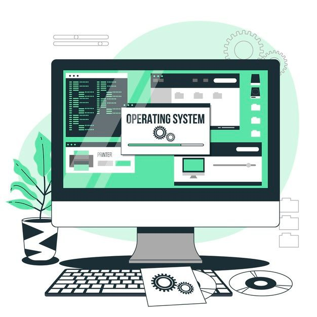

Established Fact
Established Fact


TKJ mencakup pemahaman tentang keamanan jaringan, troubleshooting, dan manajemen server, yang sangat relevan dengan perkembangan teknologi informasi saat ini. Jurusan TKJ sangat cocok bagi siswa yang memiliki minat di bidang teknologi dan komputer serta ingin berkarier di dunia IT.
Siswa mempelajari cara merakit perangkat keras komputer, melakukan perawatan, dan mengganti komponen jika diperlukan.
Fokus pada pengaturan dan pengelolaan jaringan komputer, termasuk instalasi router, switch, dan pengaturan IP address.
Mempelajari tentang langkah-langkah untuk melindungi jaringan komputer dari ancaman atau serangan seperti hacking, virus, dan malware.
Mengajarkan cara menginstal, mengonfigurasi, dan mengelola sistem operasi, baik untuk komputer pribadi maupun server.
Berkat ilmu yang kalian berikan, kami lebih siap menghadapi tantangan di bidang teknologi dan jaringan komputer. Semoga ilmu yang diajarkan terus memberi inspirasi untuk kami berkembang.
Pak Caman
Pak Alwi
Pak Agung
Pak Pajar


Sekolah yang keren dan menarik